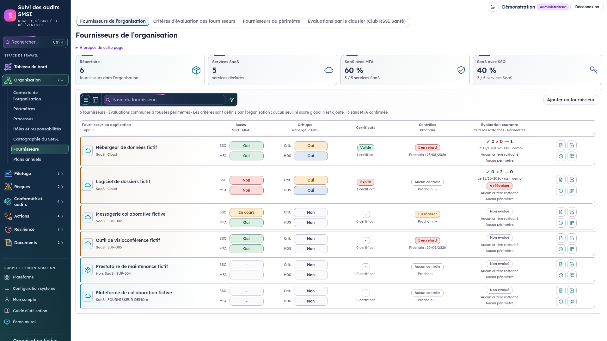
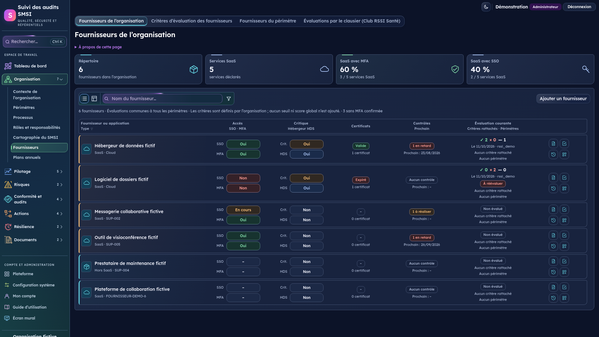
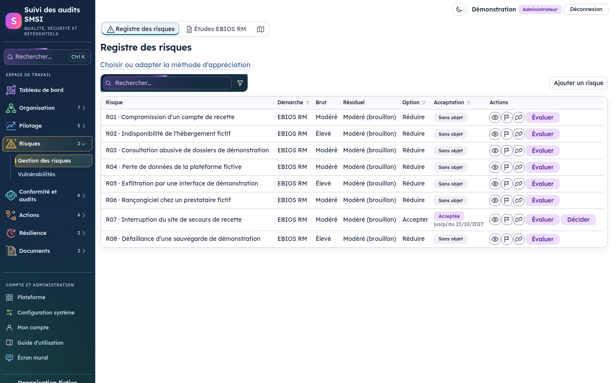
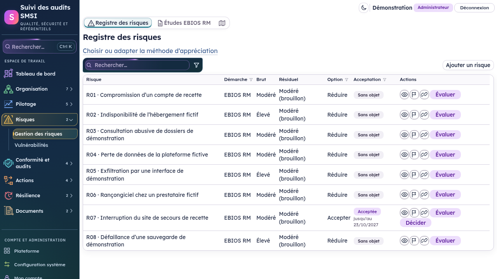
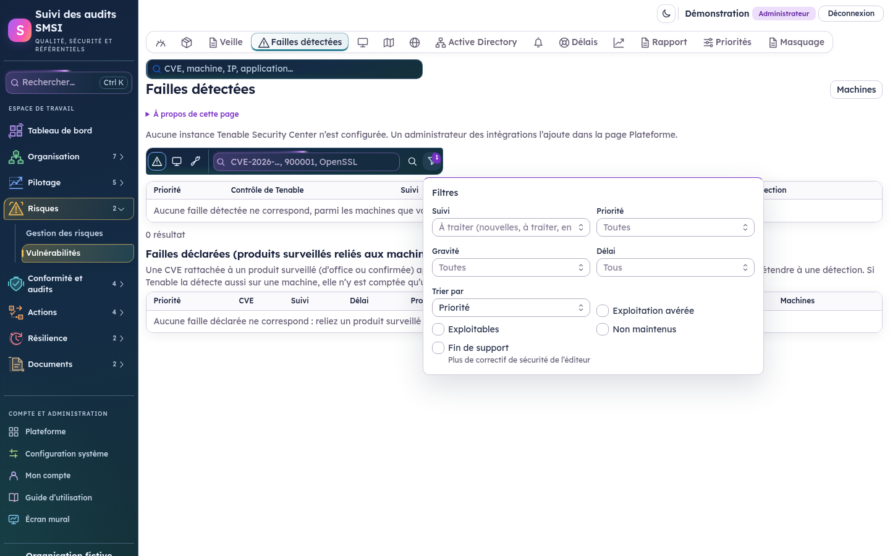
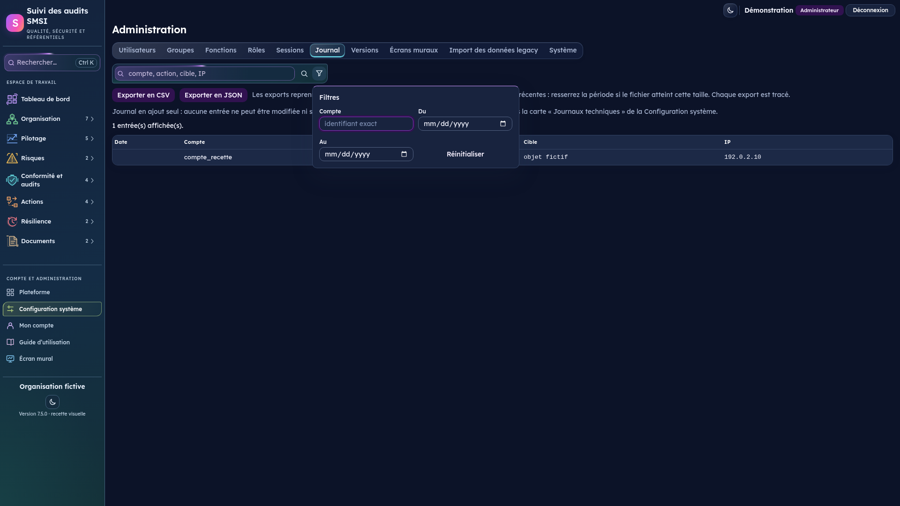
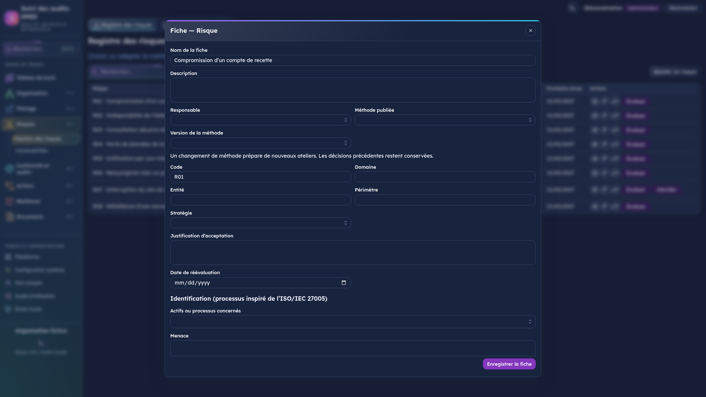
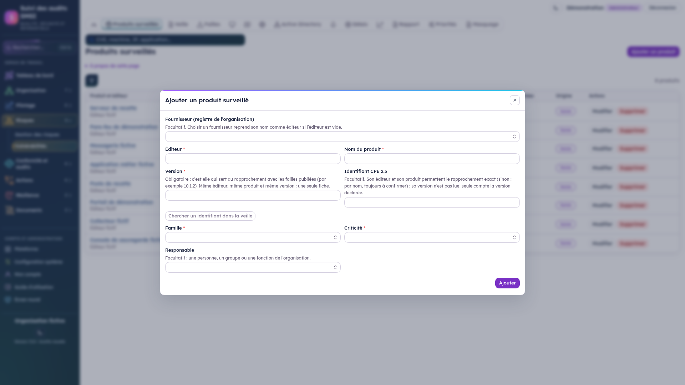
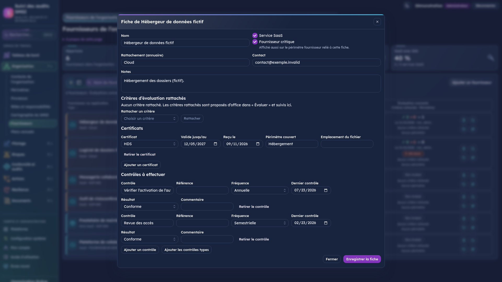
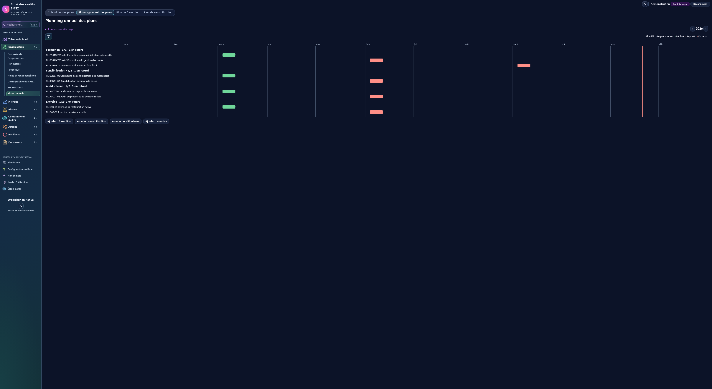

Harmonisation Neon — 21 novembre 2026
Captures réelles de l’interface, données fictives et API simulée. Images natives sans retouche. Cliquez pour ouvrir le PNG complet.
Dossier technique, résultats et limites

Fournisseurs — clair, normal, 1920 × 1080

Fournisseurs — sombre, normal, 1920 × 1080

Risques — clair, normal, 1440 × 900

Risques — clair, compact, 1280 × 720

Failles — filtres au premier plan, clair, 1440 × 900

Audit — panneau de filtres, sombre, 1920 × 1080

Fiche de risque — sombre, 1920 × 1080

Création de produit — clair, 1920 × 1080

Fiche fournisseur — sombre, 1920 × 1080

Planning — sombre, normal automatique PC, 3840 × 2100